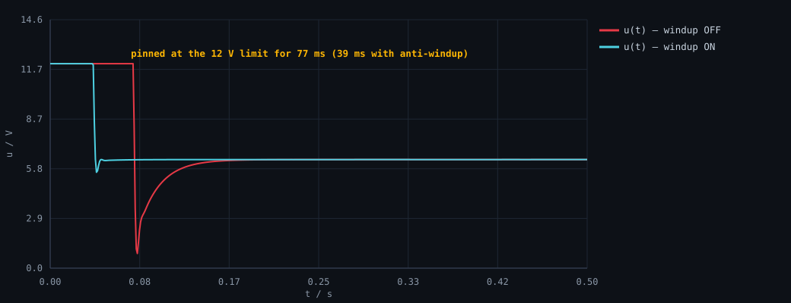

这是我在整个 PID 仿真里最意外的一组数据。两组参数完全相同——Kp=1、Ki=50、同一个电机模型、同一个 12 V 限幅——唯一的差别是：一组打开了「积分限幅」，一组把上限设成了 1e9（等于关闭）。
结果：一组的超调是 1.09%，另一组是 44.04%。差了 40 倍。
| 场景 | 积分限幅 i_max | 峰值转速 | 超调 | 输出饱和时长 | 调节时间 |
|---|---|---|---|---|---|
windup_off |
1e9（相当于关闭） | 288.08 rad/s | 44.04% | 77 ms | 139 ms |
windup_on |
8.0 V | 202.19 rad/s | 1.09% | 39 ms | 39 ms |
目标转速 200 rad/s。数据来自 data/metrics.csv 与 data/windup_off.csv / data/windup_on.csv。

一、先看控制量，才知道转速为什么冲那么高
只看转速曲线，很容易以为是「增益太大」。但把同时刻的控制量 u(t) 画出来，原因就一目了然了：

把三件事按时间排起来，机理就完整了：
- t = 0：误差 200 rad/s，比例项瞬间就是 200 V（Kp=1），远超 12 V 上限 → 控制量被限幅顶死在 12 V。
- 0 ~ 77 ms：电机在这个电压下全力加速。注意——这期间转速还没到 200，误差一直是正的，所以积分项一直在往同方向累加。它不知道输出已经顶到天花板了。
- t ≈ 78 ms：转速冲到峰值 288 rad/s，这时误差已经反向（−88 rad/s），积分项才开始往下扣。
- 78 ~ 139 ms：控制量必须先把那个「超额累加的积分」还清，才谈得上把转速拉回来。这 61 ms 就是纯浪费。
Ki · |e|。启动瞬间 e = 200 rad/s、Ki = 50，也就是 10 000 V/s。哪怕只有几十毫秒同方向，也能攒到几百伏的量级——而输出电压上限只有 12 V。这就是「饱和」：积分项累加到了一个输出永远无法表达的数值。
二、抗饱和做的是什么
最朴素、也最常用的做法就是给积分项单独加一个上限。看代码（pid.c）：
/* ---------- 积分项 I ---------- */ /* 写成 ki·error·dt 累加，这样 ki 的量纲是 1/s，换采样率不用重调参数 */ pid->integral += pid->ki * error * dt; /* 积分限幅：最朴素的抗饱和 */ if (pid->integral > pid->i_max) pid->integral = pid->i_max; if (pid->integral < -pid->i_max) pid->integral = -pid->i_max;
就这两行。本组实验里 i_max = 8.0（V），因为输出电压上限是 12 V，把积分项限制在同一个量级再收一收，避免它单独就把输出打满。
效果直接体现在前面两个数字上：饱和时长从 77 ms 降到 39 ms，峰值从 288 降到 202。它的原理是——一旦积分项攒到了 8 V，再攒也没有意义了（输出反正已经满了），所以干脆不让它继续攒。等误差反向时，需要「还」的债只有 8 V 而不是几百伏，于是超调就被控制住了。
三、还有一个前提条件值得单独说
如果没有输出限幅，这个实验根本不会出现 44% 的超调——因为控制量可以给到 200 V，误差瞬间就被打没了，积分项也来不及攒。 积分饱和是「输出限幅」和「积分作用」两个东西同时存在才会出现的问题。
而真实系统里输出限幅是必然存在的：PWM 占空比只能在 0~100%，电源电压只有 24 V，电机电流有上限，底盘功率还有裁判系统给的功率上限。所以抗饱和不是「优化项」，是工程上的标配。
四、复现方式
git clone https://github.com/shisisishi/stm32-learning-notes cd stm32-learning-notes/code/06-pid-sim gcc -O2 -std=c99 -Wall -Wextra -o pidsim sim.c pid.c plant.c -lm ./pidsim # 核对 data/metrics.csv： # windup_off 这一行 → overshoot_pct = 44.040 , settle_time_s = 0.139 # windup_on 这一行 → overshoot_pct = 1.094 , settle_time_s = 0.039
两组场景在 sim.c 的 CASES[] 里只差两个字段：i_max（1e9 对 8.0）和 use_ilimit（0 对 1）。